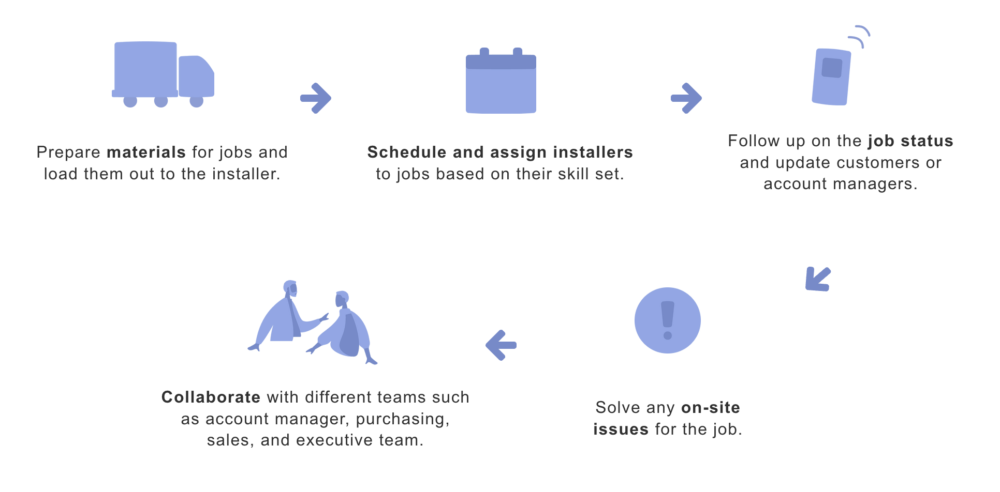
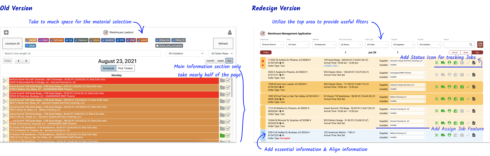
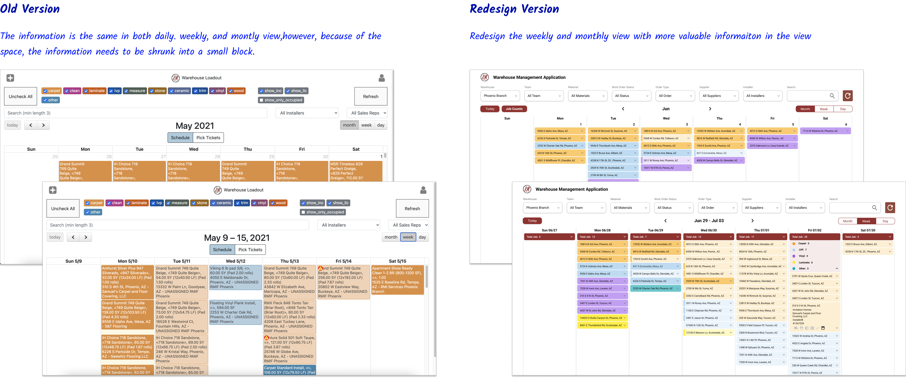

OVERVIEW
Challenges of handling increased demand in flooring business amidst booming real estate market.
RMI is an interior design company that specializing in the flooring business. We provide materials and installation services to our customers across different markets and have multiple warehouses throughout the United States.
The hot real estate market has led to a rapid increase in jobs in the flooring business, and our warehouses are handling more than double the volume of work they did before the increase of demand. However, our warehouse operation team has struggled to maintain their usual level of efficiency.
Rebuild warehouse management application to boost efficiency and reduce labor costs
Redesigned the warehouse management application to improve warehouse efficiency, allowing warehouse staff to manageincreasing workloads without additional personnel.
RESEARCH & DISCOVERY
Insufficient information and functionality in the old warehouse management system results in inefficiency
Contextual Inquiry
Conducted contextual inquiry research to understand how the old warehouse management system assisted users and observed the warehouse staffs’ working processes and daily tasks they needed to handle through the application.
Warehouse Operation Managers Working Process:
Warehouse Operation Managers Journey Map

User Interview
Interviewed 25 target users to gain insight into the management of warehouses and the collaboration between warehouse operations managers and account managers. Also, gathered users’ feedback about their experience with the old warehouse management system.
Insights
- #1 Users needed to switch between multiple applications to get work done.
- #2 The process of assigning installers was tedious; a simple change requires several steps to complete.
- #3 Too much information on the calendar view made it difficult for the user to target information.
- #4 There is no view for account managers to overview warehouses’ performance and workload.
DESIGN & VALIDATE
Iteration Overivew
 Core Design Improvement

Before.
- Hard for users to locate the relevant information because of the layout structure.
- Users couldn’t get all the information they needed on the page, so they had to switch to other applications.
After.
-
Provide key indicators to warehouse staff for selecting installers for the job:
Job Location
Job Type
Job Materials
Job Size
Order Type
- Include hyperlinks for convenient access to relevant sites or pages
 Offer an easy and simple process for managing suppliers
Offer an easy and simple process for managing suppliers

Before.
- Warehouse staff had to assign suppliers to each job and record them in our internal system
- Required several tedious and time-consuming
- Installer information would just recorded on a paper
After.
- Directly assign suppliers and installers within the warehouse management system
- Add a place to record installer information in the system
- Simplify the steps for assigning and recording the suppliers and installers by using the dropdown selection

Before.
- The monthly and weekly page views were the same as the daily view
- Much more crowded with all the detailed information including
After.
- Listed all the jobs on the monthly view without details, so it will serve as a place for staff to overview warehouses' performance and their workloads
- Added job summary for each day in the monthly view so staff can get an overview of the workload
- Added expanded view for each job so users can get more detailed information

Before.
- Only have three filters on the top
- The design of the filter is inconsistent
After.
- Provide more filter options to help them narrow down their job lists and manage the work more efficiently
-
These filters are key indicators of their job search:
Warehouse
Material
Work Order Status
Order Type
Supplier
Installer
USABILITY TESTING
Usability testing confirmed positive user feedback on the enhanced features and clearer interface of the updated warehouse management application, resulting in increased productivity and efficiency.
Participants
10 target users were recruited to test our redesigned version of the app. Half of the usability testing was conducted remotely because users were located in different warehouses across the State.
Usability Tasks
Users were provided with a scenario related to their daily job and asked to utilize the real examples from their calendar to test the effectiveness of the new warehouse calendar in completing those tasks. The researcher observed users' behavior and conducted interviews, including follow-up questions, to understand their actions and gather feedback throughout the process.
Outcomes
- Users feel that the new user interface of the content information is more legible, allowing them to easily skim through the job information on the calendar for their daily schedule.
- Overall, users are satisfied with the new version of the warehouse calendar, which provides them with more useful features to facilitate their work.
- The new color-coded system, indicating the job status, has been incredibly helpful for users in assigning installers and quickly reviewing all their jobs to identify any uncompleted tasks that require follow-up.
- The new features provides users with a quicker way to assign installers, which is very helpful for users and saves them a significant amounts of time in their daily jobs.
FUTURE ITERATIONS
Enhancing user familiarity and future onboarding with comprehensive documentation for the new warehouse management application
After using the new warehouse management application for a couple of weeks, users are still not quite familiar with all its functions. They are still accustomed to performing their tasks in the old way. Therefore, it would be beneficial to provide users with documentation that explains how to utilize the application's features in various scenarios. Additionally, this documentation would be valuable for onboarding training purposes.
LESSONS LEARNED
What did I learn?
From this project, I discovered that having a standard process was very important for companies, especially since our company has multiple locations across the States. Those warehouses were previously third-party warehouses, each with its own process, leading to diverse requests for functions and need in the warehouse management system. However, standardized processes were vital for maintaining employee productivity and facilitating future onboarding. As a result, in this project, I started by interviewing all the warehouses about their experience and engaging in discussions with stakeholders to establish the processes and then designed the detail of the system.